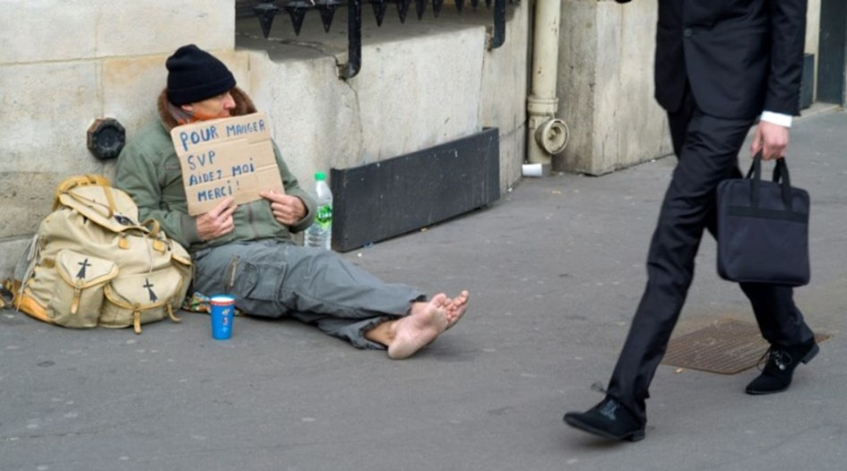
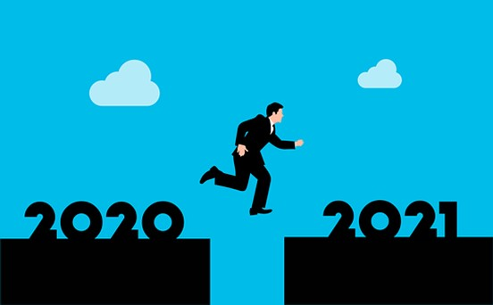

J’aimerais vraiment écrire que 2021 sera meilleur que 2020 pour la France et le monde mais je n’en crois pas un mot. Et je ne sais pas écrire ce que je ne pense pas.
Individuellement je vous souhaite à tous le meilleur mais à part l’arrivée du vaccin, ce qui se profile cette année est plutôt violent.
C’est au premier trimestre que les faillites et cessations d’activité devraient tomber comme à Gravelotte entraînant chômage, fermeture d’activités, désertification des centres de petites villes et de villes moyennes.
La misère sociale et la disparition de nombre de lieux de convivialité que sont les bars et les restaurants devraient encore renforcer le sentiment d’abandon des personnes et des territoires. Mais surtout, on devrait voir la fin du « quoi qu’il en coûte » et je crains que pour ceux qui espèrent un annulement des dettes, le réel ne les détrompe rapidement.
Il y a beaucoup d’argent à se faire en bradant la solidarité pour favoriser les assurances privées. Retraites, système de santé, chômage... je crains que notre sécurité sociale ne serve de variable d’ajustement à la crise financière.
L’hôpital en est une des preuves. En pleine crise sanitaire, les fermetures de lits se poursuivent et la question du recrutement du personnel nécessaire n’est toujours pas à l’ordre du jour. La santé en France est depuis longtemps à deux vitesses, l’accompagnement des malades est de plus en plus médiocre et cette crise devrait encore s’accentuer en 2021.
L’éducation offre aussi un vaste champ à donner en gage à des financiers sans âme. L’enseignement peut être une mine d’or s’il ne se soucie que de capter les rejetons de l’élite et de ceux qui rêvent d’y accéder. L’enseignement public se dégrade entre absence de discipline, idéologie égalitaire, refus des classes de niveau, absence de rigueur des enseignements et liberté pédagogique qui confine au grand n’importe quoi. Résultat la France est dans le peloton de queue du classement et tous ceux qui en ont les moyens cherchent des solutions dans le privé pour faire échapper leurs enfants à une baisse de niveau qu’ils constatent et que les études confirment. Or renoncer à l’exigence dans l’enseignement c’est achever un idéal de justice par la reconnaissance du mérite et bloquer l’ascenseur social.
Le service public est de moins en moins un capital que la France transmet à ses enfants, le capital de ceux qui n’en ont pas et de plus en plus un pis-aller où les salaires sont médiocres, les moyens pas à la hauteur et les exigences, basses. Ce mouvement devrait s’accentuer en 2021. Or l’idéal républicain est appuyé sur la force du service public et le sens de l’intérêt général de ses agents. Mettre à mal le service public est la meilleure façon de trahir la promesse républicaine.
Lors du premier confinement, la France souffrait mais pouvait nourrir l’espoir du changement. A l’époque les pouvoirs publics renouaient avec l’idée de souveraineté. On reparlait réindustrialisation, relocalisation, protection du peuple, réaménagement du territoire, planification... Depuis, ce discours a disparu et les enfants terribles de la Macronie ont retrouvé leur discours hors sol de rejet de la Nation, refus des frontières et soumission à la logique de mondialisation. Ils risquent de n’avoir d’autres discours pour 2021 que le retour de la rigueur alors que nous serons en plein effondrement économique. Cela risque de fortement coincer. Les gilets jaunes risquent de ne pas chômer en 2021 et de réincarner le ras-le-bol social aux yeux du peuple.
Misère sociale, crise économique et par-dessus, crise politique. De la gestion des masques au démarrage de la campagne de vaccination, l’incompétence d’une institution aussi importante que le ministère de la Santé a surpris. Bureaucratie, prétention et incompétence ont accompagné la gestion de la crise. Non seulement l’image du gouvernement n’en est pas sortie intacte mais l’appréciation de la qualité de nos hauts-fonctionnaires a été aussi fortement impactée. La confiance du pays est au plus bas.
Enfin notre gouvernement accentue les faiblesses de notre pays, lequel devrait continuer à subir terrorisme et poursuite de l’œuvre de déstabilisation de notre contrat social par les islamistes et leurs alliés racialistes. Peut-être souhaite-t ’il sincèrement agir, mais le Président n’a aucune ligne politique. Il n’est pas l’homme du régalien quand la France en a désespérément besoin. Incapable d’avoir une ligne claire il donne des gages à tous les camps. C’est ainsi qu’il dissout le CCIF et BarakaCity mais laisse les frères musulmans, islamistes violents aux desseins politiques destructeurs devenir ses interlocuteurs. Pire même avec la création d’un islam de France et d’une taxe hallal, il pourrait leur donner les moyens de créer une contre-société communautariste ayant vocation à détruire ce que nous sommes en tant que Nation.
De la même façon en ne sanctionnant jamais ceux de ses agents qui tiennent un discours très violent sur une France raciste et intolérante qui n’existe pas dans les faits, le gouvernement refuse de se positionner. Comment comprendre la ligne politique d’un pays quand le Président et ses ministres reprennent les termes de ceux qui vomissent la France et sont les meilleurs alliés de l’islam politique ? La reprise des éléments de langage des racialistes par le gouvernement autour du « privilège blanc » est une faute. Comment combattre les ennemis de la République si le fait de cracher sur les valeurs universelles vous permet d’accéder à des postes confortables et payés par nos impôts. C’est le cas à l’Opéra de Paris et pour nombre de nominations culturelles. Or le culturel est, avec l’Université, bien gangrenée aussi, un des lieux où se forgent les représentations et où les éléments de langage des ennemis de la démocratie et de la République sont très diffusés.
Les individus ont le droit de se battre pour leurs idées, même quand elles sont contraires à la civilisation, à la justice, à l’égalité ou à la liberté, mais pas au sein de nos institutions, avec les moyens de la France et grâce à l’argent des citoyens. Nos institutions doivent refléter nos valeurs, pas être des miradors d’où l’on tire sur le cœur de la citoyenneté.
Visiblement nos représentants ne comprennent pas cela et offrent pouvoir et visibilité à des personnes qui pourtant détestent ce que nous sommes en tant que peuple et culture.
Le « en même temps » n’est pas une posture crédible et elle est en train d’affaiblir notre pays et nos institutions. J’ai cru cette année que notre président allait acquérir une stature d’homme d’État avec le traumatisme de l’assassinat de Samuel Paty. Mais il est très vite retombé dans son péché originel : un discours par interlocuteur, une affirmation un jour, son contraire le lendemain, d’où un positionnement illisible.
Alors que souhaiter pour 2021 ?
Que le Président, ses ministres et son parti délaissent l’amateurisme et se hissent au niveau de leur devoir ? Après cette année où ni la crise sanitaire, ni le procès du massacre de Charlie, ni la décapitation d’un professeur n’ont donné lieu à une succession d’actes forts et cohérents, j’ai du mal à le croire.
Alors pour 2021, je souhaite juste me tromper, voir toutes mes analyses démenties, me révéler piètre prophète et misérable prédicatrice. Une belle année vaut bien quelques blessures d’amour propre, si c’est pour notre bien commun.
Partager cette page